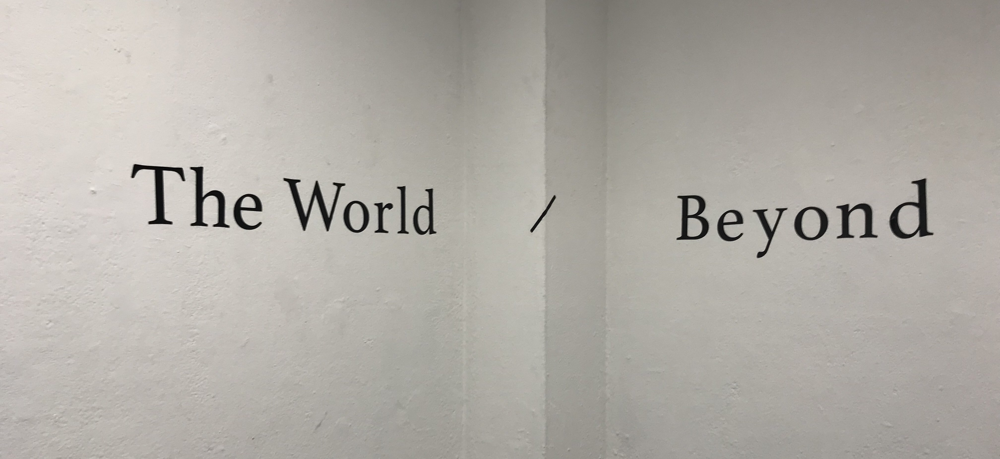
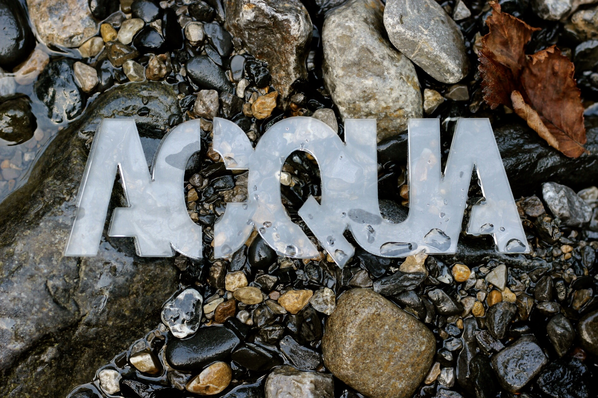
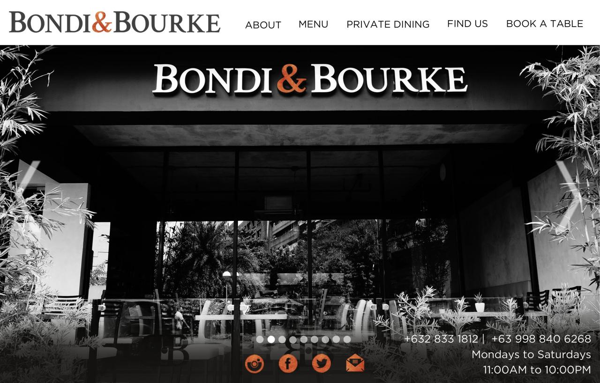
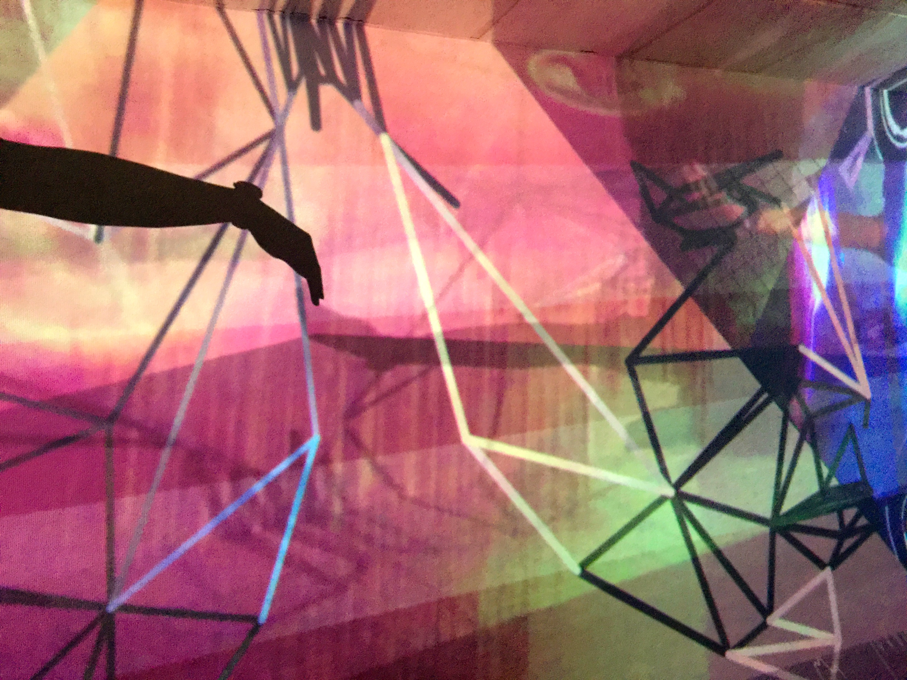
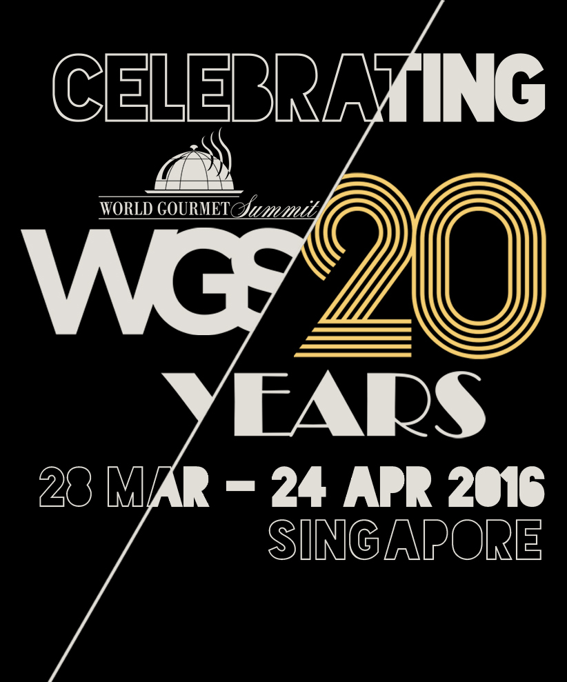
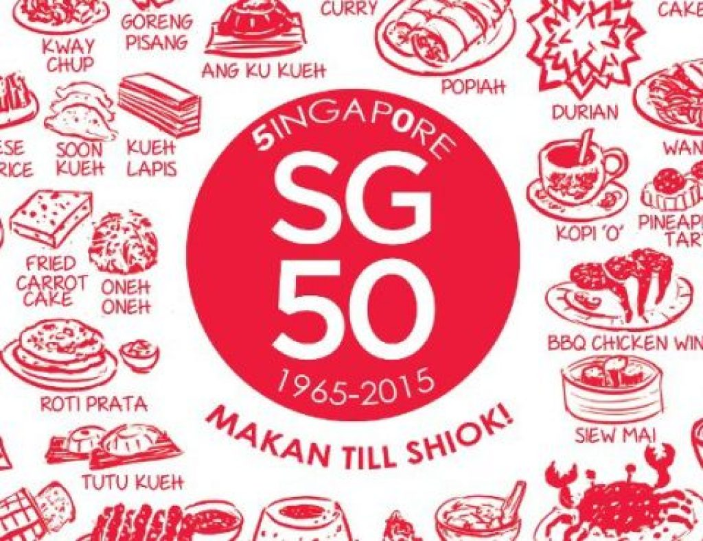

Brian Yulo Ng is an aspiring Filipino/Singaporean Artist, Animator
and Chef. His works often balance different aspects of nature, fantasy and oppression.
He is currently pursuing a Double Degree for
Bachelor of Fine Arts in Studio Arts and Experimental
Animation in the California Institute of the Arts. Many of his digital and
analogue installations have been featured in Singapore,
the Philippines and the United States. His Animated Films have also been shown throughout multiple Film Festivals around the world.
Through an exploration of different techniques
he works between mediums of performance, cooking, film, drawing and animation.
He has worked as a Line Cook/Sous Chef in the Philippines, served as a Corporal
First Class in the Singapore Armed Forces, a Print & Digital
Media Technician in California as well as a Free-Lance Caterer, Animator,
Producer and Collaborator for films in the Greater Los Angeles area.
-"Terrarium (2018)" Official Selection
Wild & Scenic Film Festival: 17th Annual Wild & Scenic Film Festival 2019 in Nevada, California
-"Terrarium (2018)" Official Selection Natourale: Nature & Tourism Film Festival 2018 in Wiesbaden, Germany
-"Terrarium (2018)" Honorable Mention for Experimental Film at the
TopShorts Film Festival: TopShorts Online Film Festival 2018



- The World/Beyond : Mid-Residency Exhibition California Institute of the Arts Fall 2018:
Stop Motion Timelapse Film, Social Experiment and Week-long Performance on
The Destruction of Knowledge.

- Nature Art and Habitat Residency Program "Acqua" Resident Summer 2018 in Bergamo, Italy

2017
-Print & Digital Media Lab Technician:
Print & Digital Media Lab School of Art/
California Institute of the Arts (September 2017-present)
-Line Cook/Prep Cook Bondi & Bourke Restaurant: Bondi & Bourke
Upper Class Australian Restaurant in
Bonifacio Global City, Makati City Manila (May 2017-August 2017)

-"Internal Reflection (2017)"" Interactive Projection Mapping Installation Digital Arts Expo 2017: California Institute of the Arts Digital Arts Expo Spring 2017 in the Walt Disney Modular Theater.

2016
-Corporal First Class, Chief National Serviceman Fulltime of Maintenance & Services Platoon, 1st Army Maintenance Base: Singapore Armed Forces
-Line Cook, MOSAIC Restaurant in WGS 2016, World Gourmet Summit 2016

2015
-Head Chef, Mobile Column 50th Singapore National Day Parade Golden Jubilee, SG50
